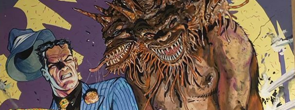

The title strip of the short-lived Dice Man choose-your-own-adventure experiment, this stars Rick Fortune as a paranormal private eye in the mould of classic hard-boiled noir characters such as Mike Hammer, Sam Spade and Philip Marlowe (but probably not Dick Spanner). You are in possession of the Dice of Destiny, which you roll at the beginning of the story to see which magic power you will have available to you.
Art by Brendan McCarthy
| Story Title | Parts | Pages | w indicates a wraparound coverCovers | Year(s) | Issues | Writer | Artist | Colourist | Letterer |
|---|---|---|---|---|---|---|---|---|---|
Supertitled "You are the Dice Man..."In the Bronx, No-One Can Hear You Scream | 1 | 24 | Glenn Fabry 1 | 1986 | DM2 | Pat Mills | Graham Manley | [b&w] | Mark King |
Supertitled "You are the Dice Man in..."Dark Powers | 1 | 19 | 0 | 1986 | DM3 | Pat Mills | John Ridgway | [b&w] | Gordon Robson |
| Bitter Streets | 1 | 29 | Brendan McCarthy 1 | 1986 | DM4 | Pat Mills | Steve Dillon | [b&w] | Tom Frame |
| Murder One | 1 | 28 | 0 | 1986 | DM5 | Pat Mills | Steve Dillon | [b&w] | Tom Frame |
| year | episodes | pages |
| 1977 | 0 | 0 |
| 1978 | 0 | 0 |
| 1979 | 0 | 0 |
| 1980 | 0 | 0 |
| 1981 | 0 | 0 |
| 1982 | 0 | 0 |
| 1983 | 0 | 0 |
| 1984 | 0 | 0 |
| 1985 | 0 | 0 |
| 1986 | 4 | 100 |
| 1987 | 0 | 0 |
| 1988 | 0 | 0 |
| 1989 | 0 | 0 |
| 1990 | 0 | 0 |
| 1991 | 0 | 0 |
| 1992 | 0 | 0 |
| 1993 | 0 | 0 |
| 1994 | 0 | 0 |
| 1995 | 0 | 0 |
| 1996 | 0 | 0 |
| 1997 | 0 | 0 |